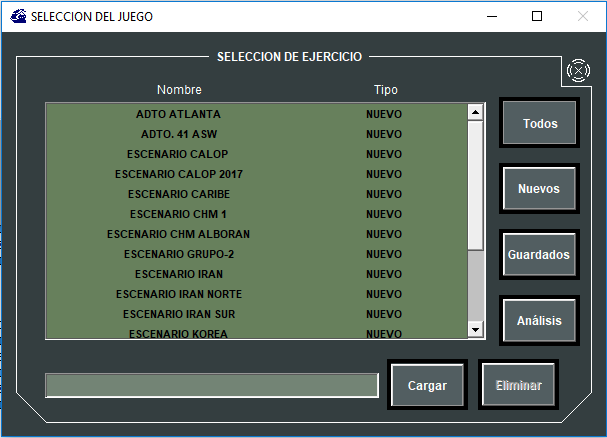

Tanto si el administrador del sistema procede a cargar un Ejercicio en Red como si un operador procede a iniciar una Ejecución Local, lo primero que debe hacerse es seleccionar un Ejercicio. Para tal fin se le muestra al operador o administrador la siguiente ventana:

Esta ventana muestra todos los Ejercicios disponibles para ser cargados en local o en red. Mediante los botones de la derecha de la ventana se pueden filtrar los Ejercicios que se muestran en la lista dependiendo de donde se obtienen los datos para su inicialización:
- Todos los Ejercicios: Se muestran todos los ejercicios para ser cargados, de cualquiera de los tipos descritos a continuación.
- Ejercicios Nuevos: Se muestran todos los Ejercicios preparados en la Base de Datos del sistema. Al cargarse estos Ejercicios, se establecerán las condiciones iniciales definidas para este Ejercicio en Base de Datos.
- Ejercicios Guardados: Se muestran todos los Ejercicios que han sido salvados para su posterior recuperación. Al cargarse estos Ejercicios, se establecerán como condiciones iniciales el estado del mismo en el momento en el que se salvó el Ejercicio.
- Ejercicios para Análisis: Se muestran todos los Ejercicios disponibles para su reproducción. Cuando se carga un Ejercicio de este tipo al iniciar una consola de instructor, ésta mostrará la Herramienta de Análisis.
Seleccionando un Ejercicio de los mostrados en la lista, el nombre del Ejercicio seleccionado se muestra en la parte inferior de la ventana. Si una vez realizada esta selección se pulsa el botón Cargar, se realiza la carga del Ejercicio.
El resultado de esta acción dependerá de si se ha iniciado una Ejecución en Red o Ejecución Local:
- Si se ha iniciado una Ejecución en Red el Ejercicio cargado se mostrará en la lista de Ejercicios cargados de herramienta de Control de Ejercicios. Junto al nombre del Ejercicio se muestra un led que indicará cuando ha finalizado la carga y está listo para su Ejecución.
- Si se ha iniciado una Ejecución Local en una Consola, y si dicha consola está asignada al Ejercicio, la Consola arrancará con el Ejercicio cargado y listo para su Ejecución Local.